Why get social?
'Healthy body, healthy mind' as the saying goes. Evidence also shows that having an active social calendar leads to positivity and emotional wellbeing. How busy you want to be is entirely up to you! We have a variety of activities and we're sure you'll find something you like.
Whether you want to join one our exciting hobby groups (exotic cooking, pottery, music lessons, arts and crafts, board games, plus many more); or enjoy something tasty with like-minded people in our Fultum Cafe (tasty breakfasts, scrumptious lunches, high teas or chats over coffee); or perhaps you would like to learn something new (budgeting tips, computer skills, independent living tips) - we've got something for you.
We also host regular quiz nights, poker nights and hold a bi-annual formal-dress ballroom evening.
All these social gatherings are great ways to meet new people and make new friends. You can come alone, as a pair or in groups. You'll always find a warm welcome and a wide choice of things to keep you busy.
Contact us on 0808 123 4567 (7am to 8pm) to find out more.
 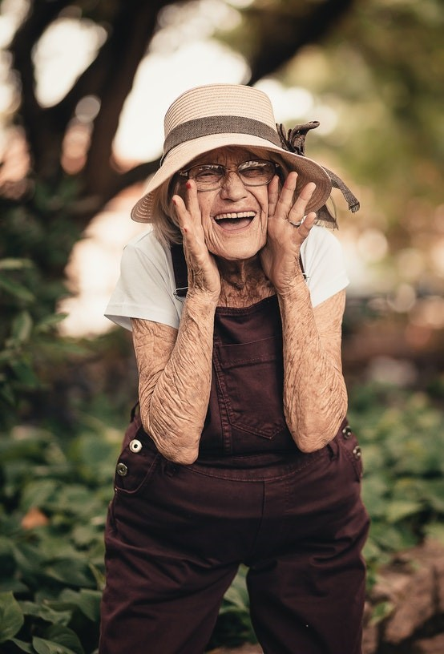
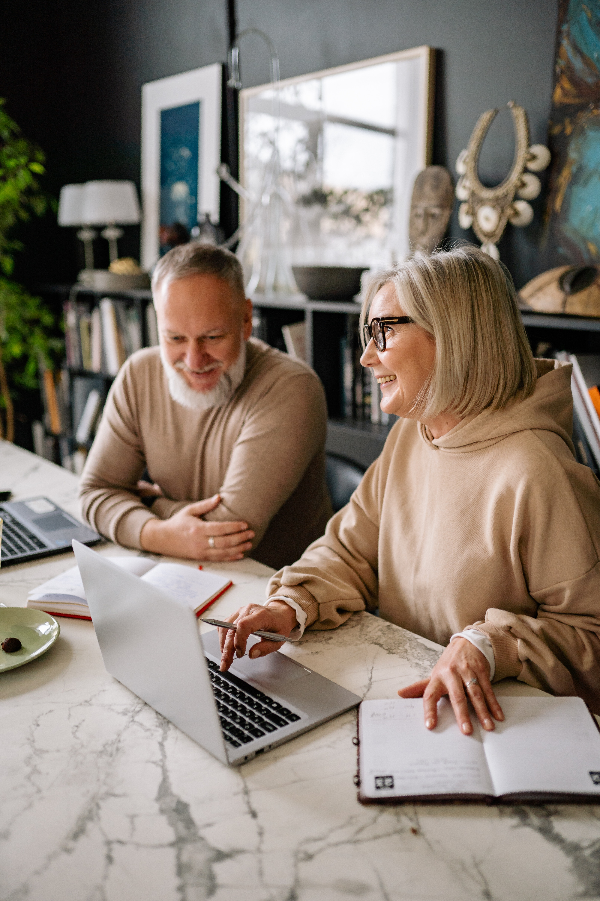
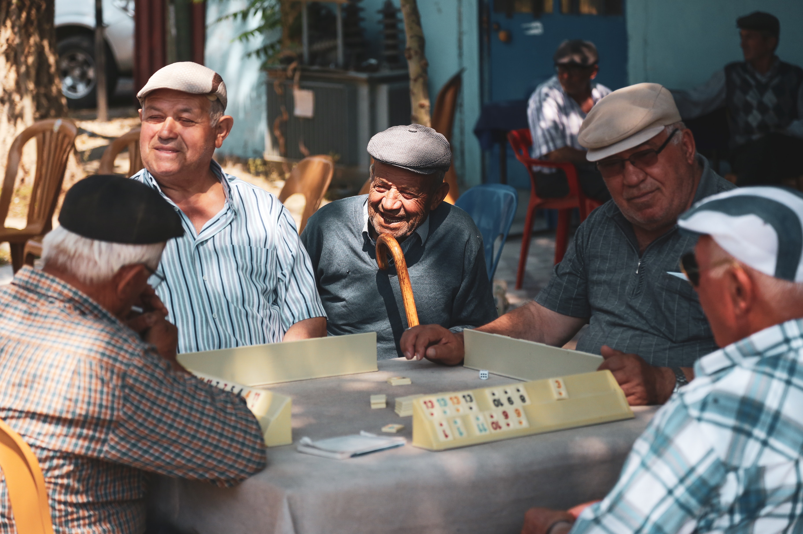
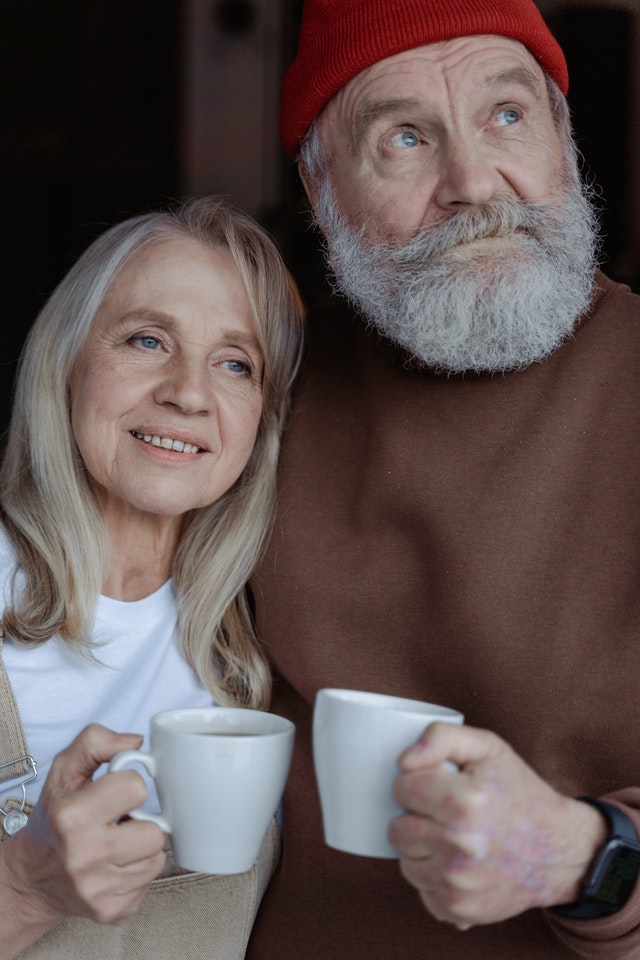
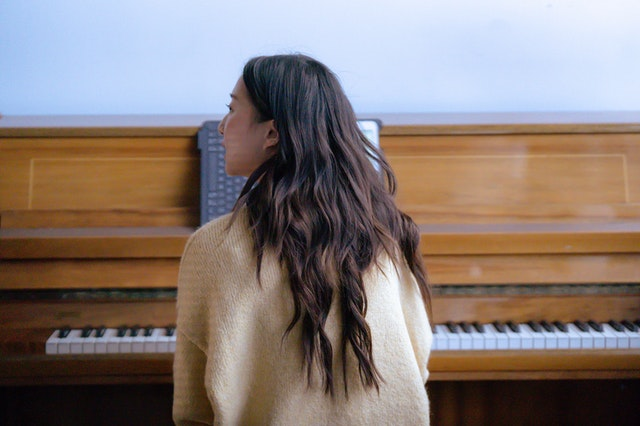
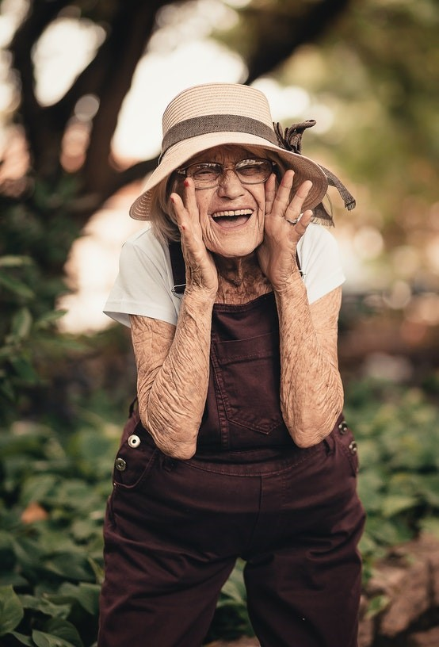
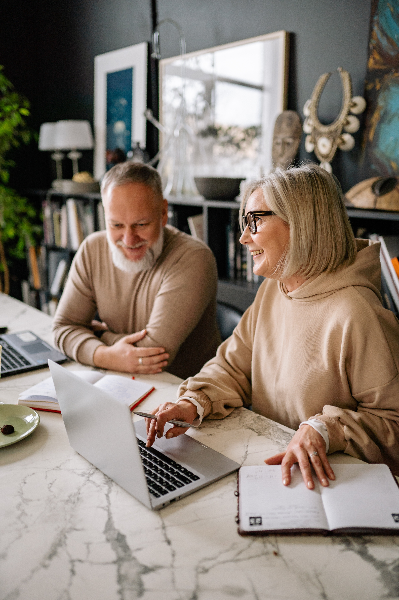
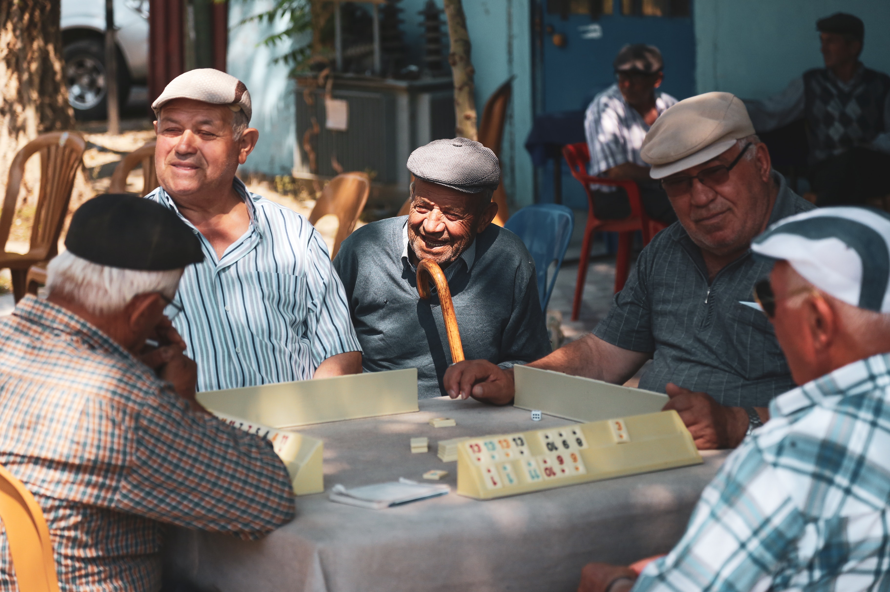
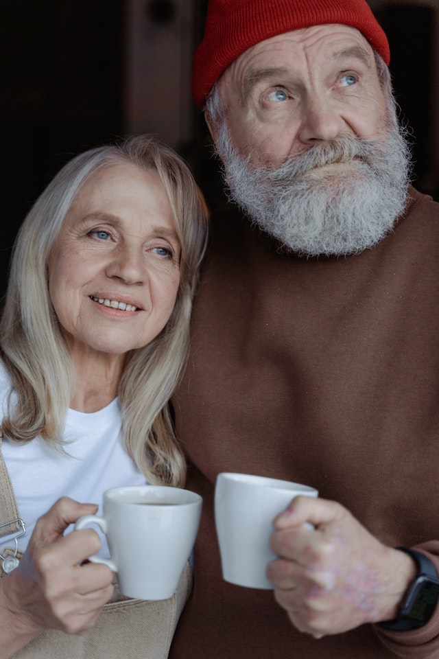
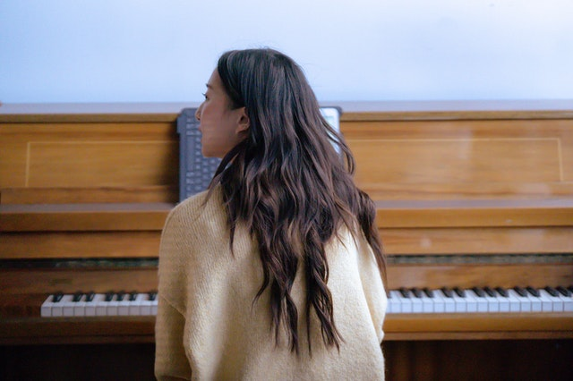
 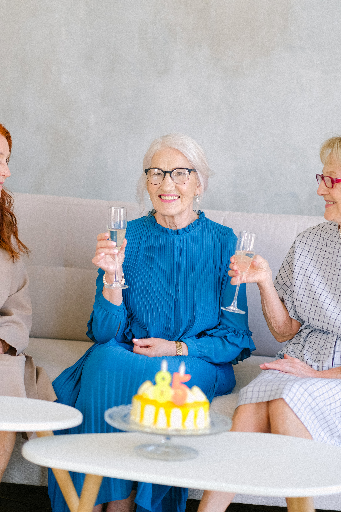
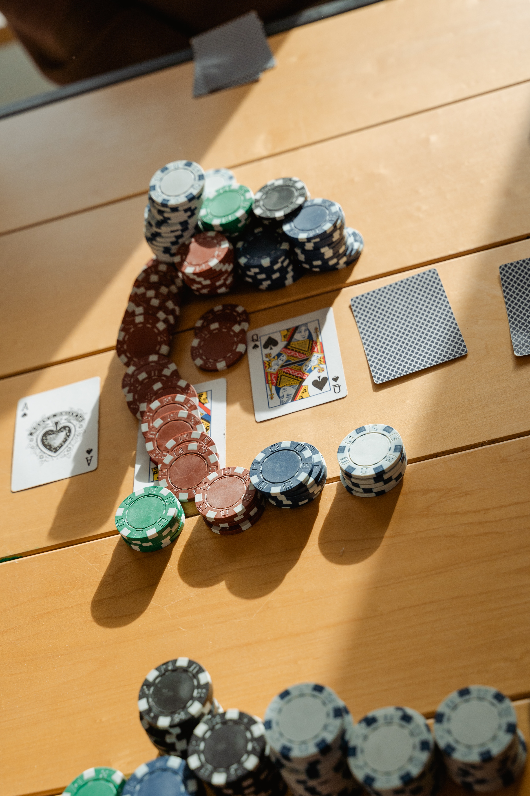
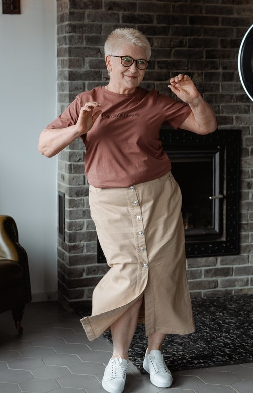
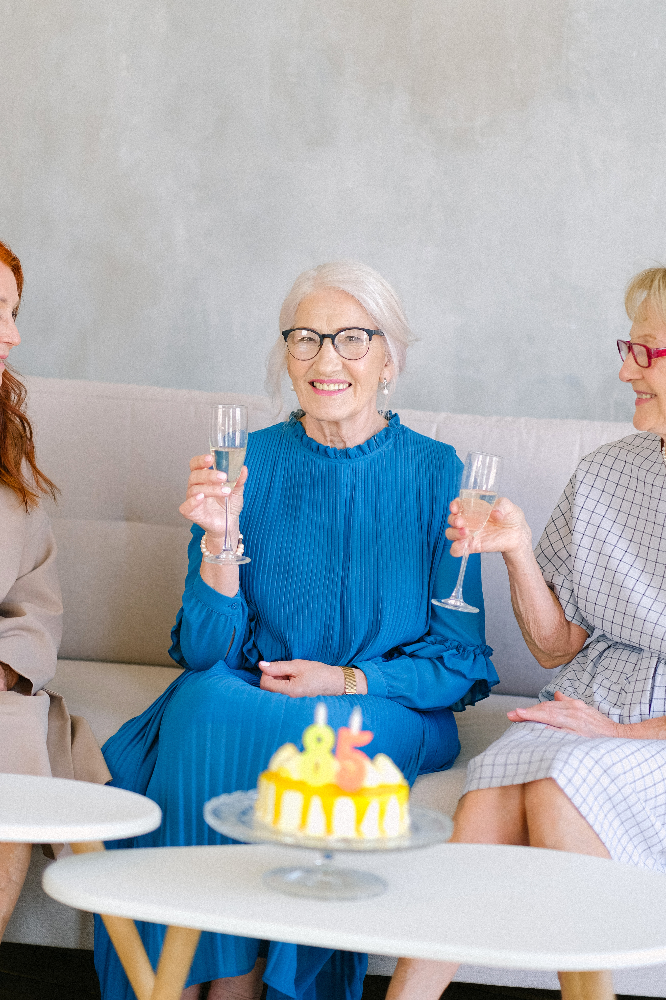
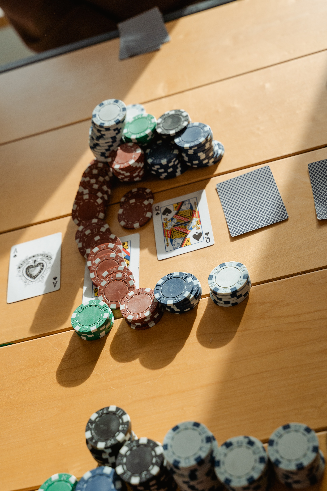
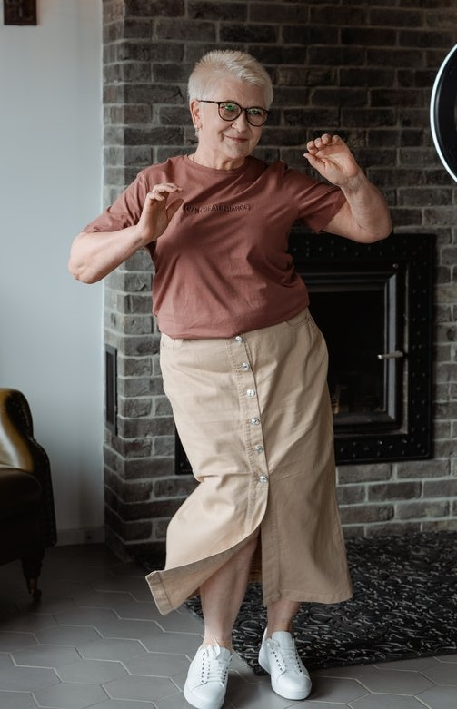
 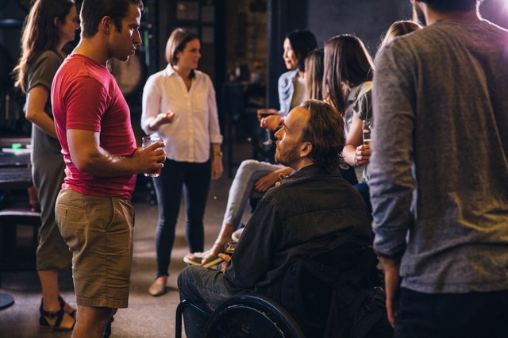
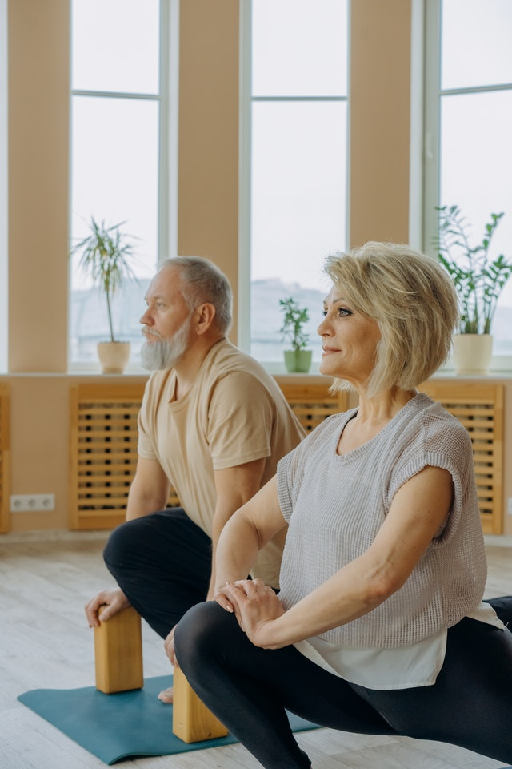
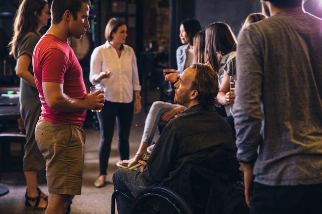
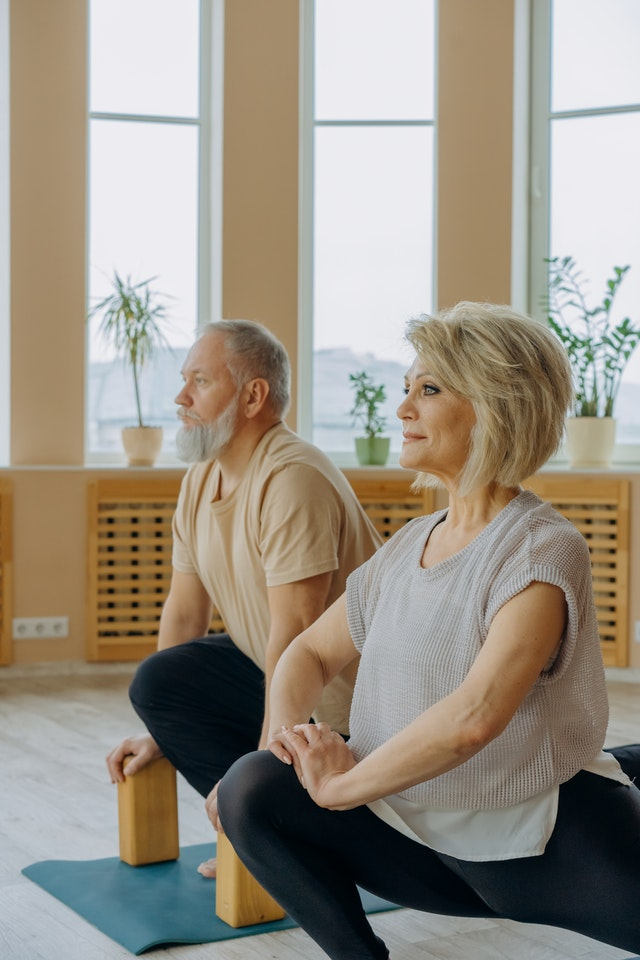